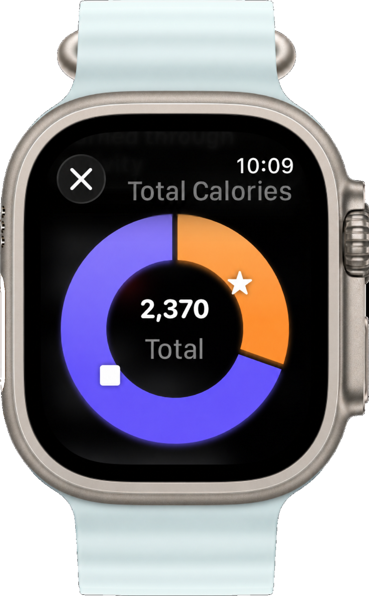
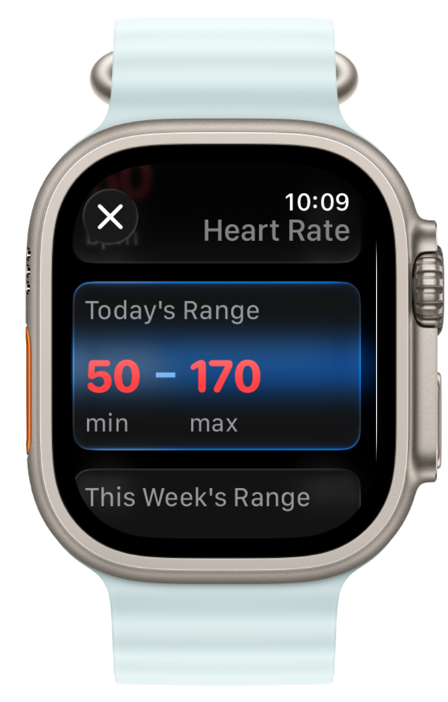
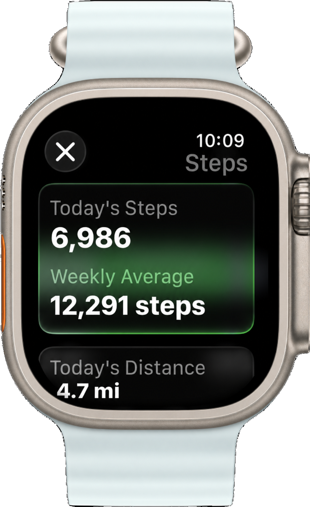
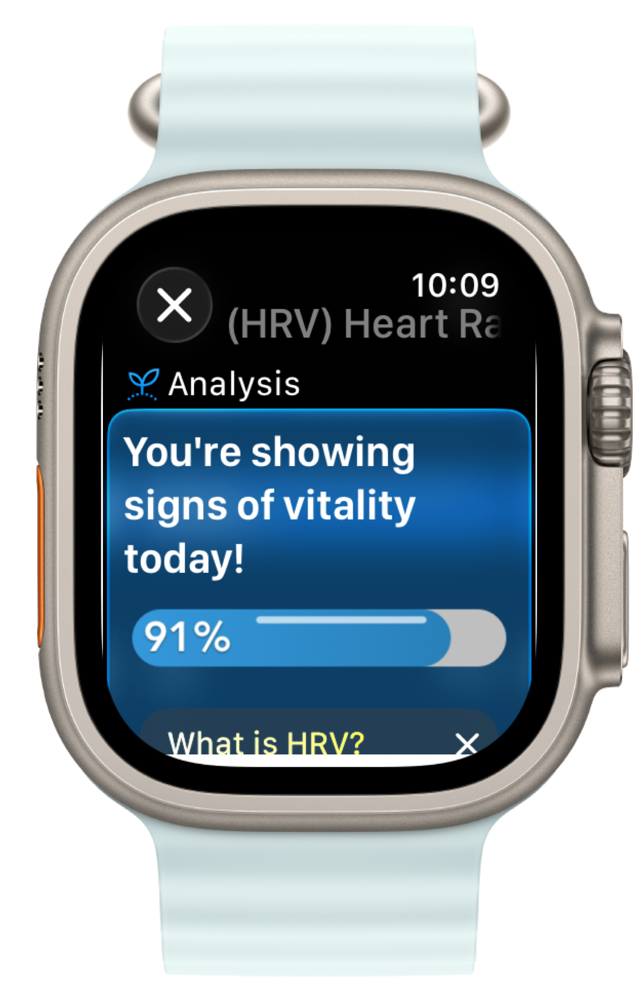
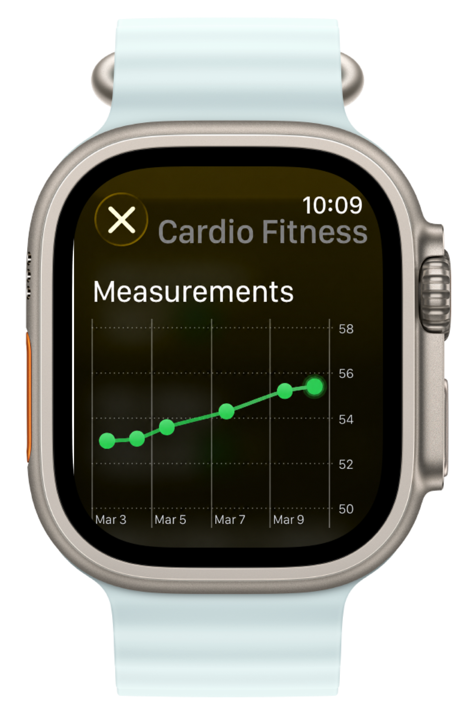
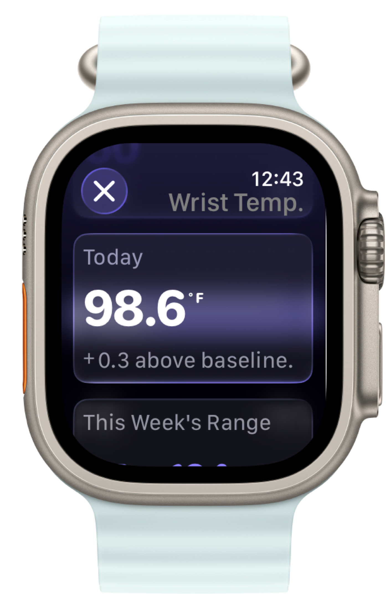
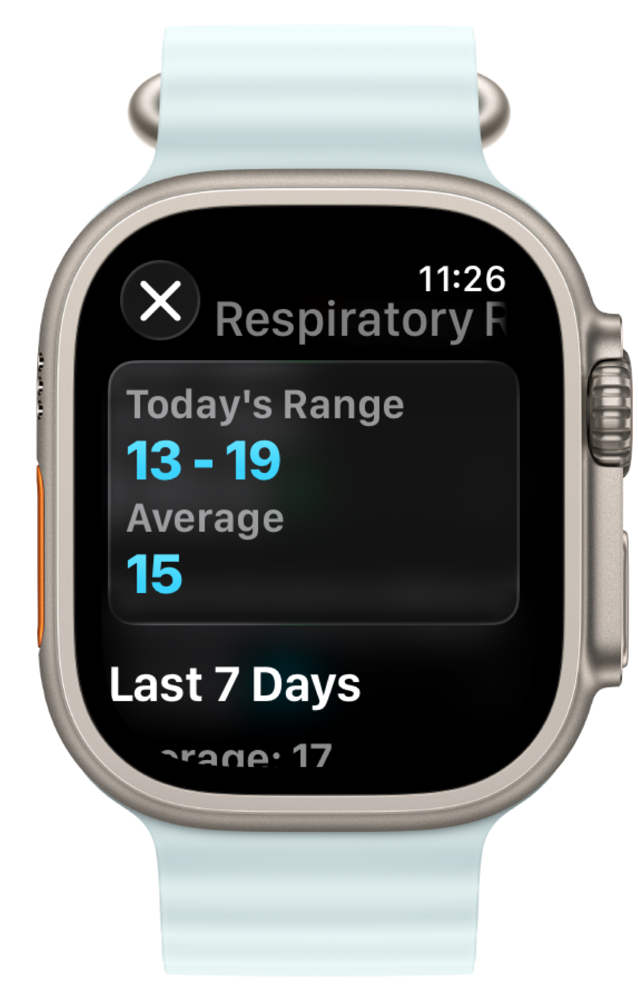
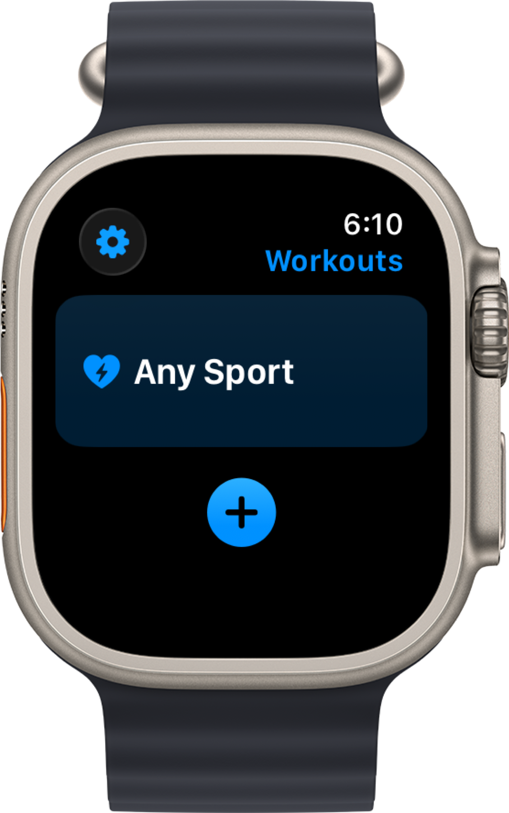
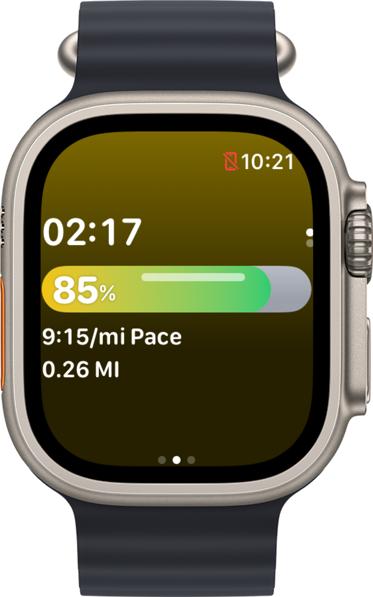
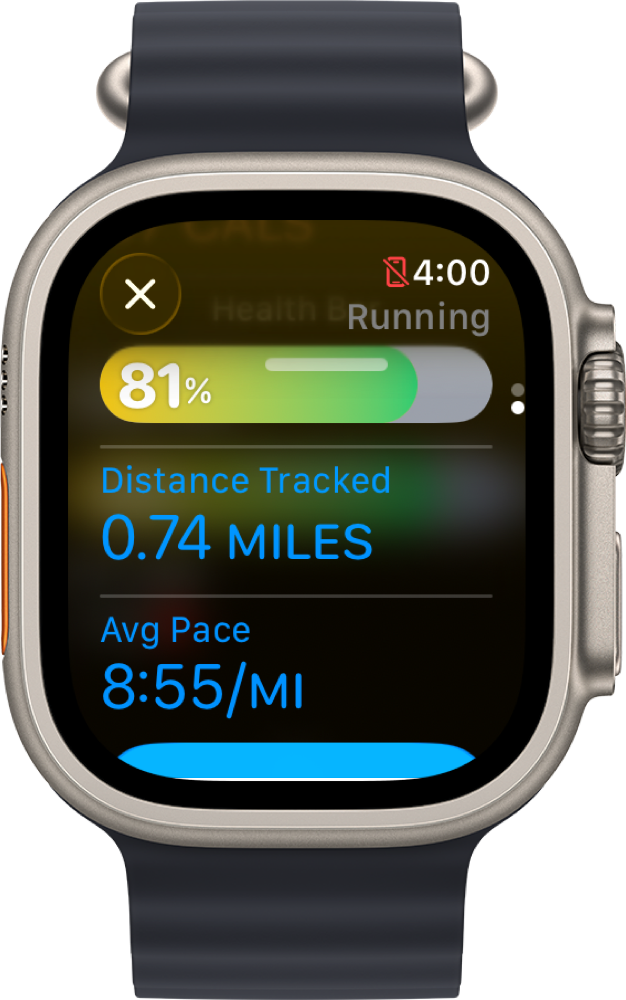

Essential Health & Fitness App
Share your health bar everywhere, explore your health stats, and workout with IRL Health Bar on Apple Watch.


Tap to download ↗
Share your health bar everywhere, explore your health stats, and workout with IRL Health Bar on Apple Watch.
Tap to download ↗
We make your complex health data simple to understand.
See what actually improves your well-being.
Track active and resting calories for an accurate insight of your total calorie expendature.

We help you track heart rate to balance recovery and exercise.

Every step counts. Watch your daily movement build.

A vital insight health stat, revealed through Mindfulness & Meditation data, that reveals your recovery and readiness.

Track and improve your Cardio Fitness the right way overtime, while learning to control your stamina.

A new leading health stat now in IRL Health Bar. Subtle shifts can reveal recovery insights and women's cycle trends.

A quiet recovery signal your body sends during sleep, and throughout the day.
Normal range

Run, walk, lift, or anything in between.
Your Health Bar goes wherever you train.
IRL Health Bar supports 20+ workouts.
Indoor, Outdoor, and wheelchair supported activities.

See your health bar, heart rate, calories, and distance as you workout.

Get a full recap when you finish, then share it straight to Strava.

Generate a share code once then plug it into the apps and screens you already use.
Bring it into Zoom calls or your menu bar with the macOS integrations.

Pin your bar to your Chrome toolbar and check it without opening a tab.

"Finally something I can actually understand at a glance. I open it every morning."
"My coach checks my bar before every session. It's changed how we train completely."
"Replaced my entire morning health check routine. One look and I know where I'm at."
"I've tried every health app. This is the only one still on my watch face after a year."
"My HRV was tanking for weeks and I had no idea. IRL Health Bar was the first thing that made it obvious."
"Simple, beautiful, and actually useful. Rare combination in a health app."
"I share my bar with my trainer every Monday. Best accountability tool I've ever used."
"As a nurse I love this. It translates data into something my patients actually get."
"Saw my bar drop to 38% and took a rest day. Woke up feeling completely different. Trust the bar."